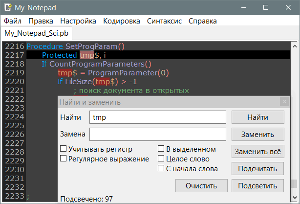
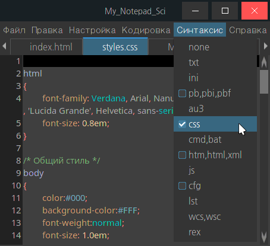

My_Notepad_Sci
Назначение
Редактор текстов с поддержкой подсветки кода и автозавершения.

В Linux.

Работа с программой
Работа с программой
- Работа как с обычным блокнотом.
- Ctrl+D - дублирование строки или выделенного - функционал поддерживается Scintilla, как и многие другие горячие клавиши.
- Работает "перетащить и бросить" файл.
Параметры в файле My_Notepad_Sci.ini
[Set]
ww=800 - Ширина окна
wh=600 - Высота окна
fontsize=11 - размер шрифта
selttransp=100 - Прозрачность выделения
font=NanumGothic - имя шрифта
numfield=4 - Ширина поля для номеров строк
AutoComplete=1 - Автозавершение для языков программирования
auto866=0 - Автоматической включение кодировки 866 для cmd, bat файлов
[Color]
color=a - Цвет текста
bg=3f - Цвет фона
sel=a0 - Цвет выделенного
caret=f - Цвет каретки
caretline=0 - Цвет строки с кареткой
indic=f00 - Цвет индикатора "Подсветка" в поиск/замена
marksel=f0f - Цвет выделенного слова по тексту
Цвет указывается 6-значным шестнадцатеричным числом, при этом сокращённые варианты расшифровываются следующим образом:
"a"="aaaaaa"
"3f"="3f3f3f"
"f80"="ff8800"
Цвета подсветки в файле My_Notepad_Sci_Color.ini
[txt,log] - расширения файлов, для которых применится эта подсветка
FDCEAE|2=\d - Цвет и регулярное выражение для подсветки
CEDF99|1="[^"]+?" - Цвет и регулярное выражение для подсветки
Регулярные выражения
На данный момент в ini-файле подсветки и в диалоге "Поиск и замена" поддерживаются регулярные выражения движка Scintilla с большими ограничениями в возможностях. Для оценки возможностей смотреть регулярные выражения My_Notepad_Sci_Color.ini. Вместо \b используется "\<" и "\>" (граница слов). Вместо диапазона [а-яёА-ЯЁ]+ нужно использовать [ёйцукенгшщзхъфывапролджэячсмитьбюЁЙЦУКЕНГШЩЗХЪФЫВАПРОЛДЖЭЯЧСМИТЬБЮ]+
Так как нет предпросмотра вперёд и назад (?<=...) и (?=...), то используется метод наложения, то есть сначала подсвечивается большая часть строки, а потом внутри неё поверх подсвечиваются другие элементы. Нет знака ИЛИ "|" чтобы подсветить набор ключевых слов, надо каждый указывать отдельно (в будущем функционал будет упрощен добавлением ini-файла с наборами ключевых слов и внутренним движком их подсветки). Индекс после цвета CEDF99|1 пока не используется, но добавлен на будущее для указания режима: регулярное выражение или отсылка к набору ключевых слов.
Ком-строка
Путь к файлу для открытия
Linux
В Linux проблема с прокруткой документа. После изменения размера окна колесом мыши прокручивается, а ползунок справа неработающий и не соответствует размеру высоты документа. Если над окном пронести файл из файлового менеджера, то прокрутка восстанавливается. Иногда после прокрутки вниз невозможно прокрутить вверх.
Запуск
Это меню берётся из конфигурационного файла Start.ini.
"exe" - исполняемый файл, ссылка, обычный файл
"arg" - параметры передаваемые исполняемому файлу.
"hotkey" - горячая клавиша. В Windows не переназначается если уже существует, в Linux наоборот переназначается.
В параметрах "exe" могут использоваться переменные:
${ProgDir} - папка программы
${Word} - выделенное слово или слово под курсором
В параметрах "arg" могут использоваться переменные:
${ProgDir} - папка программы
${hSci} - дескриптор Scintilla
${Word} - выделенное слово или слово под курсором
${Path} - путь открытого файла
${Name} - имя открытого файла без расширения
${Ext} - расширение открытого файла
В Linux в качестве "exe" можно использовать xdg-open для запуска не исполняемых файлов и ссылок.
Пример путей для Windows
exe=${ProgDir}\Tools\Help.exe - путь от папки программы
exe=\Tools\Help.exe - относительный путь от папки конфигов "...\Roaming\My_Notepad_Sci\". Если конфиг в папке программы, то от неё. Символ "\" является критерием, с проверкой что файл существует.
exe=cmd.exe - поиск исполняемого файла в переменных среды %PATH%.
Автозавершение
Автозавершение
- Смысл функционала автозавершения ускорить набор текста напечатав 1-2 буквы и нажав Enter, чтобы вставить первое по списку предлагаемое слово, либо выбрать кликом мышкой в списке, либо перемещая выделение клавишей "стрелка вниз".
- При вводе латинской буквы показывается меню предлагаемых элементов для вставки взамен части набранного.
- Если в папке AutoComplete есть папка с расширением файла и при выборе элемента автозавершения в папке есть одноимённый файл, то будет вставлено содержимое этого файла, это работает как вставка фрагментов кода (он же snippets -снипсеты).
Формат списка
- Список в начале и в конце имеет пустые строки. Это упрощает функцию поиска элементов. Если этих пустых строк не оставить, то первый и последний элемент никогда не будут найдены и не будут предлагаться для вставки.
- Список должен быть сортированный. Это исключает необходимость сортировать списки при старте программы или при открытии файлов. Если список не сортированный, то функция поиска найдя первый элемент удовлетворяющий условию не будет искать до конца списка, а только ближайшие к найденному элементы.
- Список состоит из элементов в каждой строке, но разделён не Windows разделителем CRLF, а Unix разделителем LF. Это сделано для кросплатформенности. Если не соблюсти это условие, то при вставке будет добавляться CR, так как это будет не разделитель, а часть вставляемого слова.
Формат фрагментов
- Фрагменты вставляются как есть, поэтому если отступы или переносы строк не соответствуют общему формату, это уже не проблема редактора.
- Полезно в конце конструкции добавлять перенос на следующую строку, чтобы при вставке фрагмента в код можно было писать дальше на новой строке.